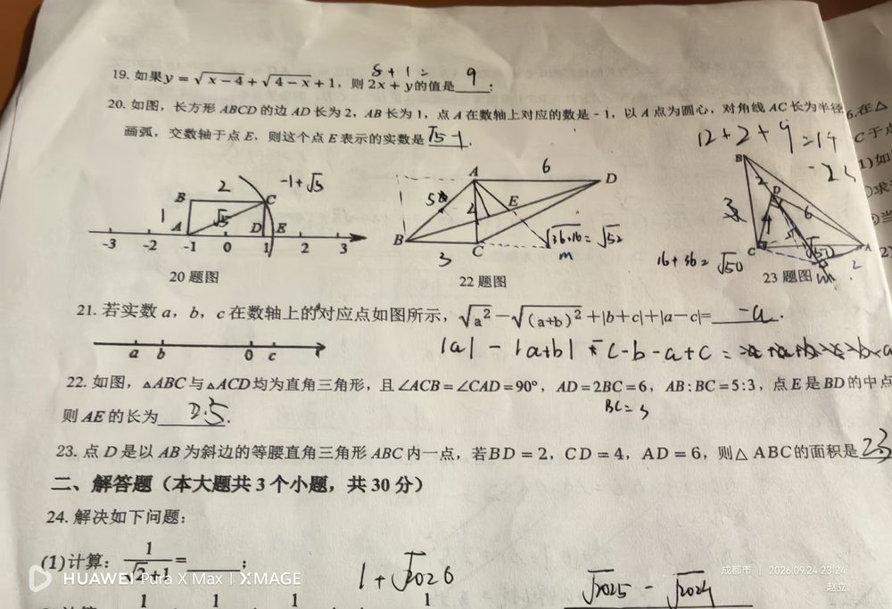

① △ABC 是以 AB 为斜边的等腰直角三角形 ⇒ ∠ACB = 90°，AC = BC； ② D 是三角形内一点； ③ BD = 2，CD = 4，AD = 6。
求 △ABC 的面积。（若琳填 23；正确答案 10 + 4√2）
【核心：把两条已知边「转」到同一个三角形里，用勾股逆定理造直角】 ① 设 AC = BC = a，则 S△ABC = ½a²，只需求出 a²； ② 将 △CDB 绕点 C 顺时针旋转 90°，使 CB 落到 CA 上，D 落到 D′： - CD′ = CD = 4，AD′ = BD = 2（旋转保持长度）； - ∠DCD′ = 90° ⇒ △CDD′ 是等腰直角三角形 ⇒ DD′ = 4√2，∠CD′D = 45°； ③ 在 △ADD′ 中，三边 AD = 6，AD′ = 2，DD′ = 4√2； 勾股定理逆定理：AD′² + DD′² = 4 + 32 = 36 = 6² = AD² ⇒ ∠AD′D = 90°； ④ 于是 ∠CD′A = ∠CD′D + ∠DD′A = 45° + 90° = 135°； ⑤ 在 △CD′A 中用余弦定理（CD′ = 4，AD′ = 2，夹角 135°）： CA² = 4² + 2² − 2·4·2·cos135° = 16 + 4 + 8√2 = 20 + 8√2； ⑥ S△ABC = ½a² = ½(20 + 8√2) = 10 + 4√2。
① 看到「三角形内一点 + 三条到顶点的距离」不知道要旋转构造（本类题的突破口）； ② 旋转方向/中心选错，D′ 落点不对，后续全乱； ③ 不连接 DD′，丢掉等腰直角 △CDD′ 提供的 45° 角与 4√2； ④ 在 △ADD′ 中看到 6、2、4√2 三边，想不到用勾股逆定理证 ∠AD′D = 90°； ⑤ 求 CA² 时不会用余弦定理（或忘记 cos135° = −√2/2，符号弄错）； ⑥ 忘记最后除以 2（S = ½a²），或写成 23 这种没有依据的值（若琳的错误答案）。
① 等腰直角三角形的性质（斜边 = 直角边 × √2）； ② 旋转变换：把分散的线段集中到同一个三角形； ③ 勾股定理的逆定理判定直角； ④ 余弦定理（或用「构造直角三角形 + 勾股」）求第三边； ⑤ 含 135° 角的三角形求边长（转化到特殊角）； ⑥ 面积公式 S = ½ab（等腰直角三角形 S = ½a²）。 📌 出处：同页第22题（△ABC 与 △ACD 均为直角三角形，AD = 2BC = 6 等）也在填空题区；若琳第23题填 23，正确答案 10 + 4√2。